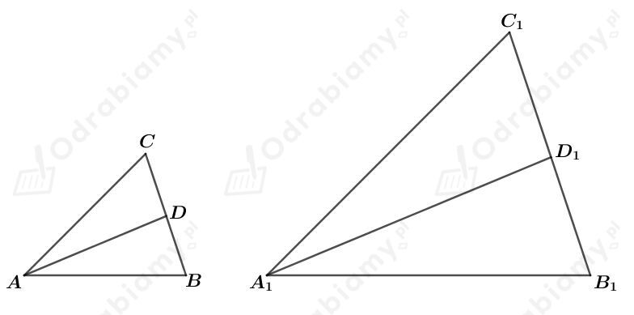
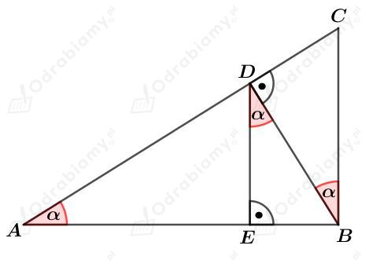

a)
Przypomnijmy cechy podobieństwa trójkątów.
Długości boków jednego trójkąta są proporcjonalne do odpowiednich długości boków drugiego trójkąta.
Długości dwóch boków jednego trójkąta są proporcjonalne do odpowiednich długości dwóch boków drugiego trójkąta i kąty między tymi parami boków są przystające.
Dwa kąty jednego trójkąta są przystające do odpowiednich dwóch kątów drugiego trójkąta (więc też i trzecie kąty obu trójkątów są przystające).
b)
Na podstawie cechy KKK uzasadniamy, że trójkąty ABP i CDP są podobne.
Z własności kątów naprzemianległych mamy:
Dane są trójkąty ABC i A1B1C1. Z treści zadania wiemy, że
Zatem trójkąty ABC i A1B1C1 są trójkątami podobnymi na mocy cechy BBB.
a)
W tych trójkątach poprowadzono dwusieczne kątów BAC i B1A1C1. Rysunek:

Podane trójkąty są podobne, więc
Odcinki AD i A1D1 zawierają się w dwusiecznych, więc
Dodatkowo, wiemy, że
Zatem trójkąty ABD i A1B1D1 są podobne na mocy cechy podobieństwa KKK.
Skoro te trójkąty są podobne, to
b)
Rysunek:
Proste PQ i P1Q1 są symetralnymi boków AB i A1B1 odpowiednio.
Zauważmy, że skoro proste PQ i P1Q1 to symetralne, to
Skoro trójkąty ABC i A1B1C1 są podobne, to:
Zatem trójkąty APQ i A1P1Q1 są podobne na mocy cechy podobieństwa KKK.
Rysunek:

Wyznaczmy pole trójkąta ABC. Mamy:
a)
Wyznaczmy pole trójkąta BDC. Mamy:
Wyznaczmy stosunek pól trójkątów BDC i ABC. Mamy:
b)
Korzystając z trójkąta DEB mamy:
Wyznaczmy pole trójkąta AED. Mamy:
Wyznaczmy stosunek pól trójkątów AED i ABC. Mamy: